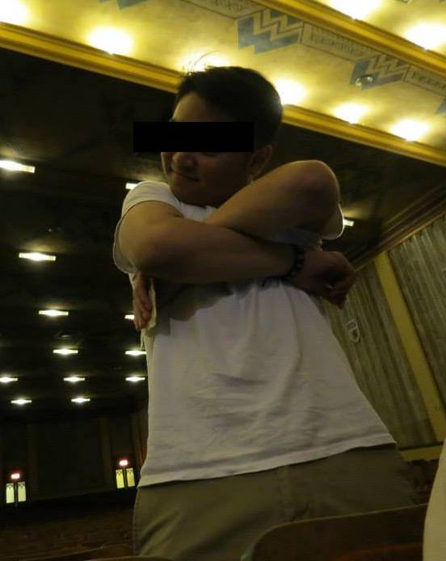

Interests

When I'm not out making a name for myself in the rap game,
I'm pursuing my other interests:
- Technical writing
-
I work as a technical writing intern at Network Infrastructure & Services.
I read documents, give them appropriate labels, and organize them within a wiki database.
-
My internship relates to digital writing because I am creating and editing content and putting it online.
-
My internship relates to the VT-shaped student through the "T" and "V" shapes: I am learning how to be
technologically proficient through my internship, which is a form of experiential learning.
- Creative writing
-
I am a creative writer major. When I'm sad about girls, I wrote poetry in a little composition notebook.
I also write comedy scripts for the Filipino American Student Association's culture shows.
-
This relates to digital media because I can potentially upload this content online using HTML.
-
My creative writing skills relate to the vertical portion of VT knowledge: departmental/disciplinary strengths.
The creative writing department has a versatile set of strengths, from writing short stories to poetry
to creative non-fiction to literary analysis. Through the department's many resources, students such as myself
have developed their own creative writing strengths and applied them outside of the classroom.
- Read-outs
-
I enjoy attending read-outs hosted by the English department. This includes events featuring the work of fellow
students as well as guest speakers. It is such a unique experience learning from peers and role models.
Everybody has something interesting to say about the lives they live.
-
This relates to digital media because I can potentially upload my own work, a reflection of my peer's work,
or reflection of a guest speaker's work online using HTML.
-
This relates to the VT-shaped student because read-outs can be considered student-life opportunities, which
are mentioned in the "V" shape. By developing and sharing their work, students observe and attempt to
understand one another artistically. Read-outs encourage learning outside of the classroom as
students come together and participate in social engagement.